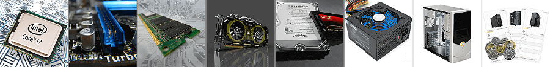
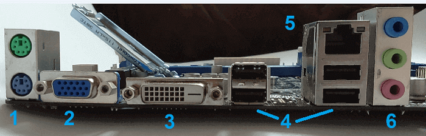
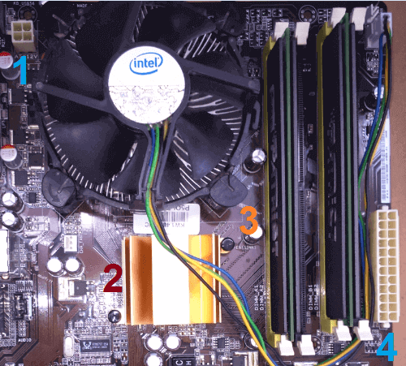
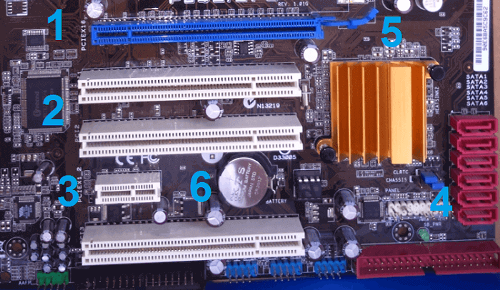
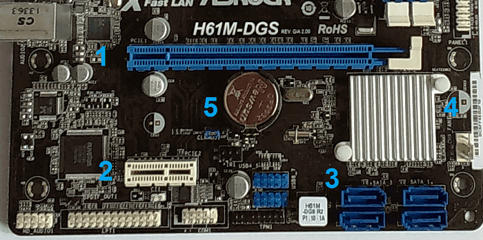
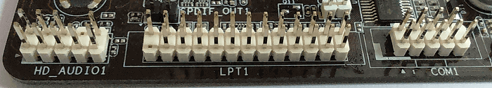

Składamy komputer. Złącza i porty płyty głównej
W kolejnym odcinku naszego poradnika o składaniu komputera, zajmiemy się charakterystyką złączy i portów jakie posiada płyta główna.

Aby powrócić kliknij baner.
Płyta główna – podstawowe złącza.
Backplate

Na sam początek weźmy na warszat wejścia znajdujące się z boku. To złącza, z których będziemy najczęściej korzystać gdyż służą do podłączania różnego typu urządzeń do komputera. Są to kolejno:
- [1] – Porty PS2 dla klawiatury i myszy starszego typu.
- Złącza [2] (Port d-sub (VGA) – analogowe złącze dla monitorów ) i [3] (DVI-D – cyfrowe złącze dla monitorów) służą do podłączania monitora jeżeli korzystamy ze zintegrowanej karty graficznej znajdującej się w procesorze bądź płycie głównej.
- [4] – Porty USB do podłączania różnego rodzaju urządzeń peryferyjnych. Myszy, klawiatury, kontrolery gier, drukarki i tym podobne.
- [5] – Port Ethernet, do podłączania internetu za pomocą kabla RJ-45.
- [6] – Kanały audio wbudowanej karty dźwiękowej, do podłączania słuchawek, głośników czy mikrofonu.
Górna część płyty głównej

- [1] – (EPS) oraz [4] (24 pin) – Są to złącza zasilające. Wpinamy w nie odpowiadające im wtyki z zasilacza, jest to niezbędne do doprowadzenia prądu do podzespołów komputera, a co za tym idzie jego pracy.
- [2] – Nie jest to złącze, ale warto wiedzieć cóż za cudo znajduje się w tym miejscu. Otóż jest to mostek północny.
- [3] – Sloty na pamięć RAM.
Dolna część płyty głównej (ATX)

- [1] – Złącze PCI-Express 2.0 dla kart graficznych;
- [2] – Złącza PCI dla kart rozszerzeń;
- [3] – Złącze PCI-Express x2, również dla kart rozszerzeń;
- [4] – Porty SATA do podłączania dysków twardych i napędów w obecnym standardzie. Poniżej w tym samym kolorze znajduje się port ATA dla tych samych urządzeń starego typu, podłączanych potocznie zwaną „taśmą”.
- [5] – Mostek południowy;
- [6] – Bateria BIOSu, służy do podtrzymania jego ustawień nawet bez włączonego zasilania.
Dolna część płyty głównej (micro ATX)

- [1] – Złącze PCI-Express 3.0 dla kart graficznych;
- [2] – Złącze PCI-Express x2 dla kart rozszerzeń;
- [3] – Porty SATA do podłączania dysków twardych i napędów w obecnym standardzie;
- [4] – Platform Controller Hub – centrum kontroli urządzeń peryferyjnych. Układ, który zastąpił podział na mostek północny i południowy;
- [5] – Bateryjka BIOSu;
Dodatkowe porty

Płyta główna posiada wiele mniejszych lub większych złącz wyglądających w ten sposób. Oprócz widocznych wyżej portów: szeregowego COM1 do archaicznych typów myszy i klawiatur oraz urządzeń specjalistycznych, oraz równoległego LPT1 niegdyś służącego do podłączania drukarek (dziś oba są praktycznie nieużywane) znaleźć możemy złącza służące do podłączania przycisków obudowy, dodatkowych wejść USB, panelu audio, diód oraz wentylatorów. Jako, że są one do siebie podobne każdy z nich jest odpowiednio nazwany, a znaczenie danej nazwy znajdziemy w instrukcji płyty głównej. Dla przykładu port HD_AUDIO1 służy w tym przypadku do podłączania wyjścia na słuchawki i mikrofon przedniego panelu obudowy.